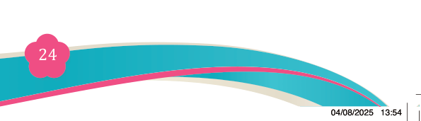
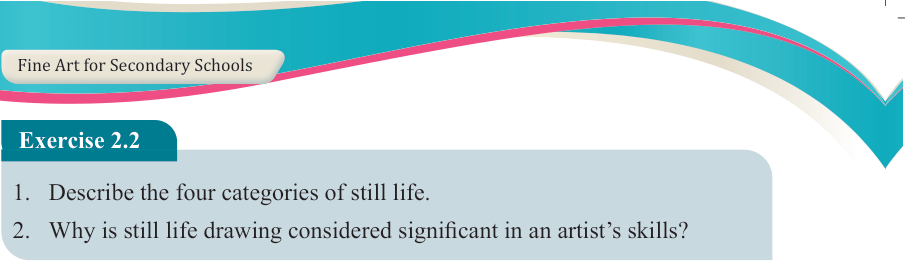

Fine Art for Secondary Schools

24

Student’s Book Form Two

Exercise 2.2
1. Describe the four categories of still life.
2. Why is still life drawing considered significant in an artist’s skills?
Principles of still life composition
A builder or a tailor uses principles that provide guidance throughout whatever
they do so that the product comes out with all the standards. This also happens in
still life drawing or painting since the art is guided by principles with which an outstanding work of art is produced. The following are the principles of still life composition:
(a) The subject matter
The subject matter is the main idea that is to be communicated. It is the root of a still life composition. To determine the subject matter in a still life drawing or painting, one must determine what is depicted in the composition, meaning there
must be a story to tell. The subject matter also refers to the type of objects depicted
in a composition. To communicate effectively through visual composition, there must be a clear and intentional selection of objects. These objects can be either
natural or man-made, as outlined in the introduction to this sub-topic. It is essential
that the chosen objects align with and support the intended message or meaning of the artwork.
(b) Arrangement of objects
This is an art of arranging objects in their own form. Objects can be arranged and
re- arranged many times before starting drawing until the purpose is achieved. The
advantage of still life composition is that artists can display things/object differently
and interestingly from the way we see them in our environment. There should be an overlapping effect on the arrangement; the forms should be appealing to the eye and there must be balance in the composition.
(c) The rule of thirds
The rule of thirds states that “if you divide your composition into thirds, either vertically or horizontally, and then place focal area of your scene at the meeting point of them, you will get a more pleasing arrangement”. Figure 2.6 (a & b) are illustrations of the rule of thirds.
04/08/2025 13:54